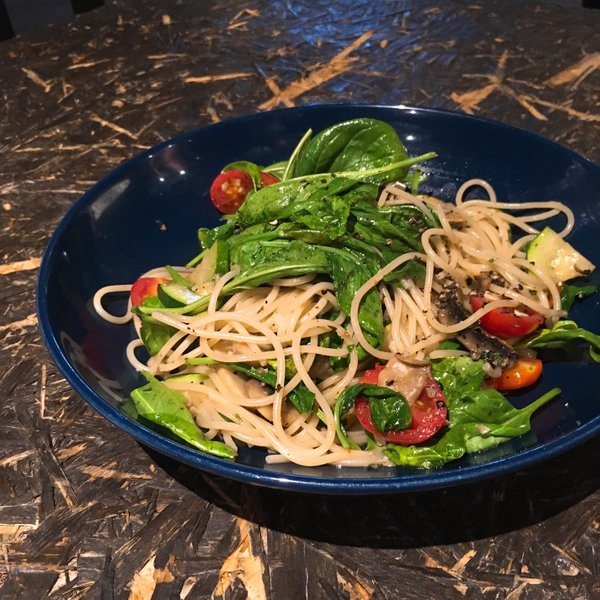

Guigino's have the most tasty seafood in the entire city of Philadelphia. It's founder, Jimmy Guigino is the son of an Italian plumber who works for coins and magic mushrooms. It is told that the secret to their most tast Snapper fish is the slow cooking of the fish that takes almost 18 hours.
 Visit the restaurant website.